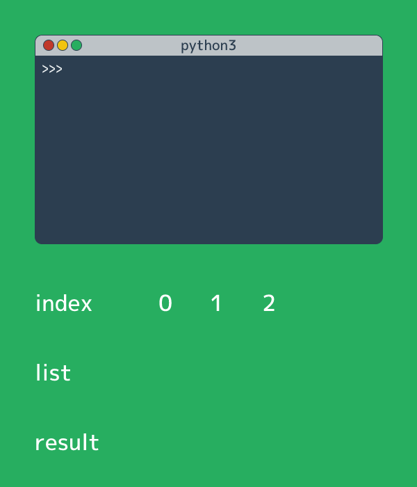

世界は作れる
プログラミングは教養

Python
ITは現代に欠かせない存在です。
世界中にITを使った様々なシステムがありますが、それらは全て「プログラム」の通りに動いています。 つまり、プログラムを作るプログラミングの知識は全てのIT技術の裏側にあるということです。 必ずしもプログラミングの知識がなくても「機械を使う」ことは本当の意味で理解することはできません。
Pythonは様々なプログラミング言語のなかでも、 特に「簡単で初心者向け」で「色々なことに使えるので上級者になっても使える」という点で優れています。
以下のページでPythonの解説をしています。
Python Boot Campプログラミング言語Pythonの入門サイト
